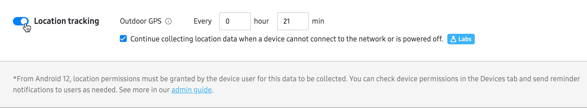

Locate missing devices (Labs)
Last updated October 21st, 2026
Knox Asset Intelligence can help locate lost or stolen Samsung Galaxy devices even when they are offline by using the SmartThings Find network. When a device is marked in the system as ‘missing’, nearby participating Galaxy devices can detect and relay its location data. As an IT admin, you can then use the Device tracker feature on the Knox Asset Intelligence agent to help you locate lost devices in your vicinity.
Prerequisites
To track offline devices, all of the following conditions must be met:
- Dashboard settings: You must configure your dashboard settings to collect location and offline location tracking data. See configure dashboard settings below to learn more.
- Devices: Your managed devices must have the following:
- The latest version of the Knox Asset Intelligence agent installed.
- The Bluetooth and Location settings enabled.
- Location run time permission and Nearby run time permission in the Knox Asset Intelligence agent.
- Sub-admin permissions: If you want your sub-admins to use the Device tracker feature, you must grant them the Location permission under the Data access section. Review Configure role permissions for detailed instructions on managing role permissions.
- Admin device: To use the Device tracker feature, admins must have a Samsung account for Business. See Switch to Samsung account for Business to learn how to switch your account. Additionally, the admin device used to find missing devices must be Android 16 or later.
About find nodes
Offline location data availability also depends on nearby participating Galaxy devices in the SmartThings Find network, known as ‘find nodes’. These devices scan for and relay Bluetooth Low Energy (BLE) signals from your missing devices.
Configure dashboard settings
By default, Knox Asset Intelligence does not collect location data when a device is offline. You’ll need to enable this option on the dashboard Settings page. To do this:
- Go to Settings > DATA CONDITIONS.
- In DATA UPLOAD, find Location tracking.
- Select Location tracking, then Continue collecting location data….
- Click SAVE.

Mark devices as missing
As an IT admin, you must mark devices as ‘missing’ in order for Knox Asset Intelligence to use the Search nearby feature, which provides indicators on your admin device to guide you to a nearby missing device.
To mark devices as missing:
- Ensure you’ve met the prerequisites above for locating offline devices.
- On the Location dashboard, select the DEVICES tab.
- In the Location status column, confirm that each device shows one of the following statuses:
- Location reporting
- Location not reachable
- Select up to 50 eligible devices.
- Click ACTIONS > Mark as missing.
- Click CONFIRM.
You can have a maximum of 50 devices marked as missing at one time.
After you mark devices as missing, Knox Asset Intelligence automatically creates the system-generated Missing-devices set (Set ID: S.01) and adds the devices to it. For more information, see About set types.
Locate missing devices with the agent
After marking a device as missing, you must use the Knox Asset Intelligence agent to help locate the lost device.
-
Open the Knox Asset Intelligence app on your admin device. On the home screen, tap Device tracker.
-
The Device tracker screen appears with a list of your missing devices and their approximate distance from your admin device.
By default, distances are shown using metric system measurements. To switch to imperial, tap (More actions icon) at the top of the screen. Select a device.
-
A details page opens. It displays a map of the device’s location, and the status of its power consumption and network connection when its location was last updated.
The directions provided when using Search nearby differ between devices. Devices that are fully managed with Ultra-wideband (UWB) capabilities can provide more accurate instructions, such as the exact distance or direction you are from the missing device. Other devices provide less detailed instructions, simply displaying whether you’re approaching or moving further away from the device.
For an online device:
- Its location is relayed by the device itself and displays on the map. You can narrow down the location even further with the Search nearby and Ring features.
- Search nearby: When you tap Searching nearby, a screen appears with indicators to guide you to the device. Once you’re beside the device, the agent signals that you are close to it. If you can’t see the device, tap the ring icon to turn on the device’s ringer.
- Ring: When you tap Ring, the device’s ringer goes off, even if it’s set to mute or vibrate, for one minute or until you swipe on the missing device’s screen once you find it.
For an offline (Network off) device:
- Its approximate location is detected by nearby find nodes and displays on the map. The accuracy of the location may vary depending on the number of nearby Galaxy devices and the distance between the missing device and the find node. You can narrow down the location even further with the Search nearby feature.
- Search nearby: When you tap Searching nearby, a screen appears with indicators to guide you to the device. Once you’re beside the device, the agent signals that you’re close to it. If you can’t see the device, tap the ring icon to turn on the device’s ringer.
- Ring: The Ring button is also available for offline devices on the device detail’s page, but doesn’t have functionality. The Ring feature is only available when you connect to a device through Search nearby.
Connection delays may occur when using Search nearby, depending on the Bluetooth performance of the devices and the surrounding environment.
Troubleshoot missing devices not showing in agent
Missing devices might not appear immediately on the agent after marking them in the console. If you don’t see missing devices in the list, you can do the following:
- On the agent’s Device tracker screen, tap (Refresh icon).
- On the console’s Location dashboard > DEVICES tab, select the device, then click ACTIONS > Get the latest location.
Mark devices as found
When a missing device is recovered, you can use the console to mark it as found, which also removes it from the Missing-devices set. To do this:
- On the Location dashboard, select the DEVICES tab.
- Select one or more missing devices.
- Click ACTIONS > Mark as found.
- Click CONFIRM.
You can also mark the device as found from the Knox Asset Intelligence agent:
- Tap a device from the Device tracker list.
- Tap Mark as found, then tap Found to confirm.
On this page
Is this page helpful?